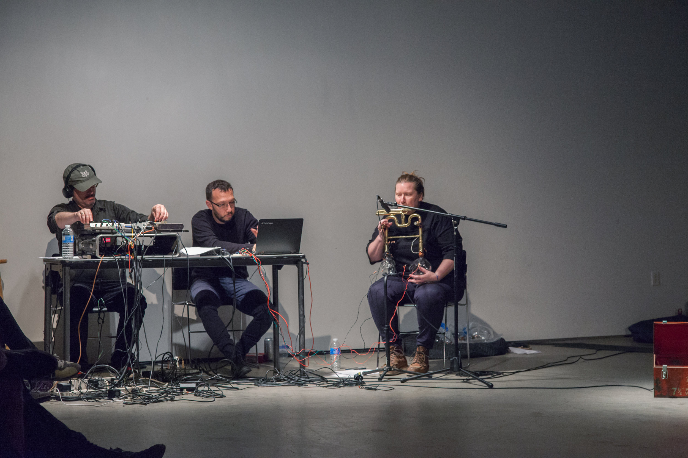
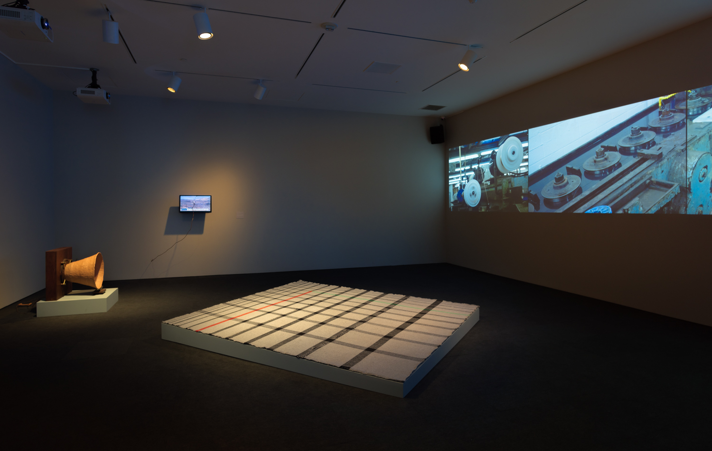
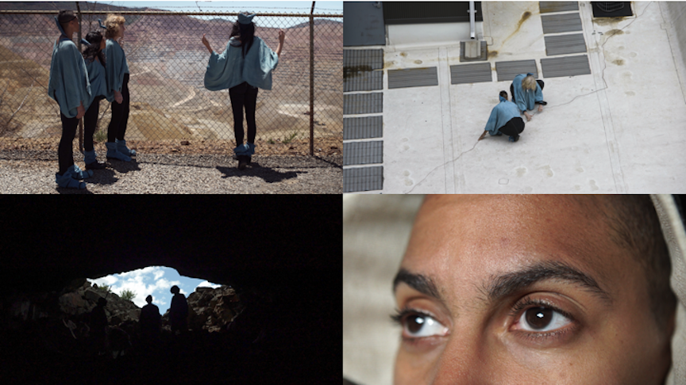
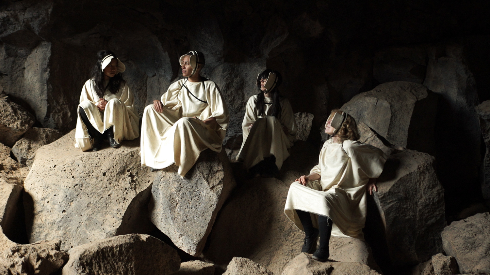
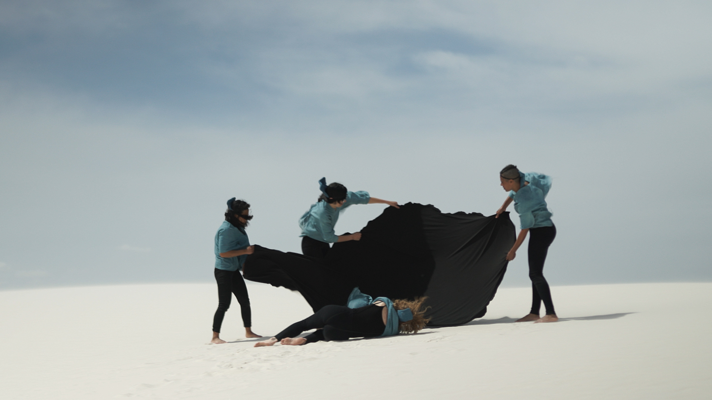
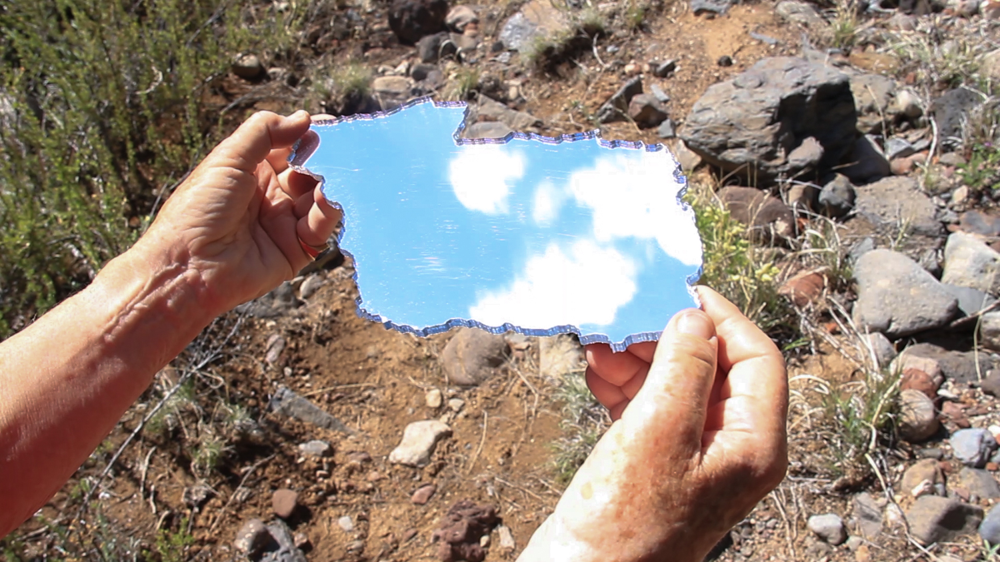

Jeanine Oleson
Artist
Jeanine Oleson is an artist whose practice incorporates interdisciplinary uses of photography, performance, film/video, and installation work. She is an Assistant Professor of Photography in the Department of Art, Media, and Technology at Parsons the New School for Design. When asked about what draws her towards collaborating with so many different types of artisans and craftspeople, she says, "I love people. I grew up with people who worked and made things. Some people made a lot of things because they were craftspeople in some way, and it often feels like there's no place left for that anymore, you know?"
Your work encompasses sculpture, performance, film… I think about myself as a proud generalist. When your work is so wide-ranging, do you ever suffer from a kind of option paralysis? That’s the idea that when you have unlimited options, it becomes harder to actually choose any of them. Not really when I make art, but I think that about writing. When you write you could make any world possible within the form of language. That actually terrifies me. There is a sort of deliberateness to the way I think when I’m working. I have an idea and I just follow it wherever I want to, wherever it needs to go. That feels like a kind of freedom that there’s actually so little of most of the time in the world. I can see how my process has allowed me to end up in different places and it makes sense it retrospect. In the moment—and when looking into the future—it doesn’t always make sense, but that’s okay. I know a lot of painters and I love their processes and I admire that they have a much more fixed set of tools, but I just wouldn’t be happy with that. I would miss the possibilities of everything you can do in time and space. I also like switching. Like when you’re making a film, the idea is one way in there and then it can morph and become something else using different materials—it might be something that has form that people can interact with, or sound, or a performance. I feel like all of those things relate to each other. I just have to understand kind of inherently what’s going to happen through that form. I think a lot about craftsmanship too and how I make things, how other people make things. I love that, the labor of craft. I’ve been working with this great brass instrument maker and I just love to go to his shop. I love everything there and I love talking to him because he’s basically like an organic physicist in regards to materials and sound. I don’t have his knowledge, but I know when I need to tap him for it.
Breathe in the World, (or, problems with you, me, we, they, hear and see), 2017. Performance at the Hammer Museum, Los Angeles. May 14, 2017. Photo: John Sisley.
There is this fantasy idea of “the solitary artist” but my life is spent with other people all the time—talking about things, trying to understand what to do next. Sometimes it’s just asking other people for help. For example, I put something on Facebook yesterday. I asked, “Will someone help me with casting?” and then all these people are like, “So-and-so works at a casting agency.” I was like, “No, no, no, no, no, no, no. Not that kind, I mean casting, as in helping me make a plaster cast of my own body!” Luckily my friend Dave came through, which is great because I hardly ever get to see him. A fun part of the process for you must be having these crazy ideas and then going out and finding the people who can help you realize them. It’s so fun. People are like, “You work with so many different people.” It’s like, “Yeah, of course.” I mean, most contemporary artists are working with a lot of people as a part of their process. I think I’m more deliberate and sometimes I take those collaborations further. I made this 3-D video recently; it was literally made in my friend’s studio because I liked the way it looked. We were doing things that he typically does there, like smelting copper and making wire. It was all about the labor of making things, so I feel like I was making a piece that was inherently about making the piece. Lately I’ve been all about examining the materials that make the actual abstraction of images or sound possible. Can we have that understanding at the same time we have the understanding of whatever the material is? I love people. I grew up with people who worked and made things. Some people made a lot of things because they were craftspeople in some way, and it often feels like there’s no place left for that anymore. It’s like we don’t live in that economy.
Hammer Projects, Conduct Matters, installation view, Hammer Museum, Los Angeles, May 6-August 6, 2017. Photo: Robert Wedemeyer.
There is something to be said for the pleasure and satisfaction of making things, whether you are an artist or not. It’s funny, when I taught sculpture, my students often wouldn’t know what to do because they’d literally never made anything. They’d never even thought about it. Then there are the students that would lock right in, and you’d see that they really understood and would start to think about how things work. They took great pleasure in making things with their own two hands. It was great to watch that. Of course, there are plenty of people, and artists, who don’t take pleasure in the actual making of things. They find pleasure in other parts of the process. From your earliest beginnings of art making, or even when you were a kid, were you always a tactile maker of things? I always made things, but I was in my head a lot, too. I feel like I did both at once, like I’m still doing. I’ve been making more films and doing more performance things lately, but sometimes the things that are made—the physical objects—end up in those places and they actually anchor it. As a kid I would dig my own clay and try to make pots. I’d be like, “Then you have to fire it!” so I’d try to figure out how to make a fire. You know, I’d create these wacky systems for doing things. They’re still really crazy, my systems. You should have seen it today here in my studio while we were making this body cast. I figure out my own way for doing things.
Crossed Wires, 2017,three-channel video installation (one channel still), color, sound, 17 minutes. Performers: Beth Griffith, Lisa Reynolds, Diwa Tamrong, nyx zierhut; Editor: Anita Chao; Score & mixing: Rainy Orteca; Costumes: Kim Charles Kay; Camera:Elizabeth Harnarine, Leah Moskowitz, Nica Ross; Sound recording: Marina Ancona, James Kienitz Wilkins
How do you contend with the demands of being a professional artist and a teacher? Do you have to create pockets of free time to be in your studio working out new ideas? I’m usually under some sort of demands, be it making things for projects or for a show, or my teaching. As far as my creative process goes, I try to remain kind of delusional while I’m doing it in terms of just being like, “Well, I have this whole process in motion and I’m going to follow it through.” I usually have much grander plans than what I actually end up doing. There’s a way sometimes I can trick myself into thinking about the things that I think I need to do in order to make the work that I think I want to make, and then in the end it often turns out to be something completely different. I feel like I’m in a kind of making mode that’s about constant problem solving. Of course, I wish I had more time to think about things outside of the demands of things like, “The space is 28 by 29 feet,” or whatever. I’m also really grateful for some of that, too. It’s strange. I feel like there’s something about the delusion of the loops that I throw myself into that keeps me from worrying too much about that final place it’s going to. A little delusion is good if you’re an artist.
Crossed Wires, 2017, 3-channel video projection (still from 1 channel), 17 mins.
Are you someone who feels creatively stuck very often? No, I frequently have anxiety about ideas and if they’re “good” enough, but I don’t get stuck, or I haven’t for a really long time. I feel like every idea leads to the next idea, even if they don’t all get used. Occasionally there’ll be things from 15 years ago that resurface and I’m like, “Oh, there’s that thing again. Great. That idea again.” I might get lazy sometimes, but I don’t get stuck without ideas. I mean, it’s just self-doubt that causes problems most of the time. Self-doubt can make you feel stuck when you’re really not. A lot of successful working artist are also teachers, often by necessity. How is the experience of teaching for you? It can be exhausting. It can also be stupid at times, but ultimately I’m able to do research in terms of thinking about art and photography and I get paid for it. I get to talk to people about it. Whenever people complain about teaching, I’m always rolling my eyes because this is honestly the best job I’ve ever had. I understand why it’s exhausting sometimes, but I think it’s a pleasure. Not all students are a pleasure, not every condition is a pleasure, but it’s mostly been a really great thing for me and it’s helped my work grow too. Aside from the financial support teaching provides, I’ve also been able to think about how and why people make things, and how to push my students and have them think about what are good ways of working, of what’s inherently a good strategy for them to make things. I’m doing that all the time for myself, too.
Crossed Wires, 2017, 3-channel video projection (still from 1 channel), 17 mins
You mentioned that you’re doing more performance-based things lately. What do get from that experience that you don’t necessarily get from simply making an object? It just does another thing. It’s something that I’ve done my whole life. I used to organize performances with my cousins when we were kids. They were always older and better than me, but I would try to organize whatever would happen. I’ve always tried to organize people to do things that entertain me on all kinds of levels. That continues on in my art. The impulse is something like, “Hey, so I’ve got an idea guys. Why don’t you all do this.” Aside from helping them sort out their own personal methodologies for creating, what other things do you like to tell your students to try and prepare them to be working artists? I’m always like, “The people you’re in school with will ultimately probably be around and be your support system in ways you can’t really understand.” I always tell them that. When I see them get all bitchy with each other, I’m just like, “Honey, they’re all you’ve got.” You know, I’m all they’ve got too to a certain degree, but it’s the relationships that you form that will sustain you. Establish your own communities. It’s like how all the Presidents have been a part of that same stupid private club. You just realize the amount of things that happen because of personal relationships and the power of that. That’s something that investment bankers are actually really good at. They understand that. That’s why they’re all such a fucking heterogenous group of people. Artists need a more diverse, less awful version of that in their own lives. We all kind of need each other, you know?
All above images from Conduct Matters Hammer Project, Hammer Museum, Los Angeles, CA May 6-August 6, 2017. Oleson also currently has work on view at Commonwealth & Council
5 things Recommended by Jeanine Oleson: Joan Jonas’ increasingly amazing work that I’ve been seeing and growing to understand accumulatively over the years. Her recent show at Gavin Brown was so inspiring. Miles Davis’ Kind of Blue — When I was a teen I was reading about harmonic systems in jazz, and when I heard this album I suddenly understood that art and critical ideas could intertwine to become something mind-blowing. It was my first ecstatic a-ha moment with art. Ulrike Ottinger’s films — Favorites are Madame X: An Absolute Ruler and Johanna d’Arc of Mongolia. Wildly inventive and uncompromising queer cinema Opera. Somewhere between the often problematic narratives/set design choices and the contrasting beauty of perfectly-controlled vocality I’m thrown into a complicated tailspin that’s productive (or just how I feel everyday in life). Love Bel Canto (Norma!), but also Modernist works by Berg, Strauss, Janáček. Science Fiction, categorically. China Miéville, Samuel Delaney, Octavia Butler, Doris Lessing’s Canopus in Argos series, Joanna Russ. Ursula K. LeGuin was life-changing as a kid.